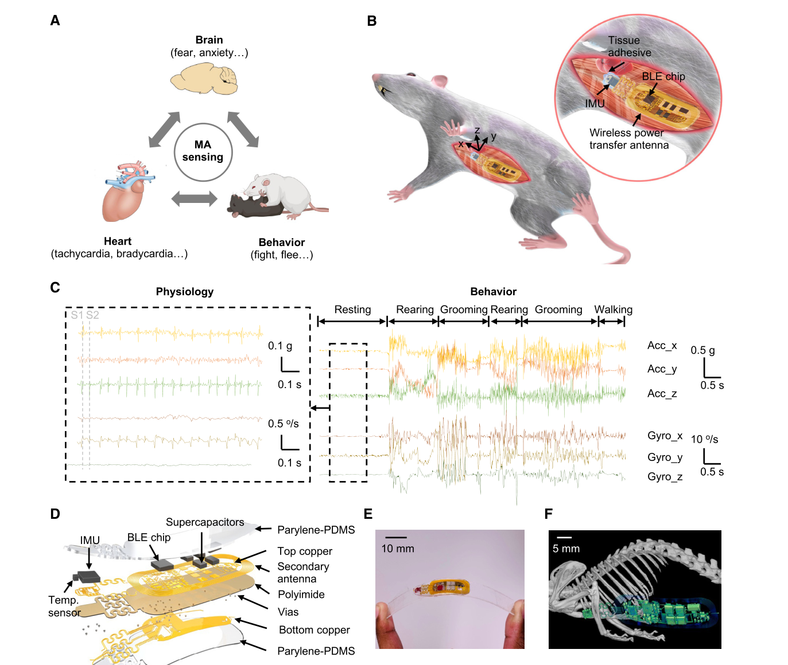

BMAD: Biomechano-Acoustic Devices
BMAD (Biomechano-Acoustic Devices) is a wireless, implantable device developed in collaboration with the Rogers Lab at Northwestern University for continuous, multiparametric physio-behavioral monitoring in freely moving small animals and interacting groups. By analyzing mechano-acoustic signals recorded directly from the body, BMAD extracts heart rate, respiratory rate, physical activity, temperature, and behavioral state from a single wireless platform, without tethering or manual restraint. This work also reflects close collaboration with Dr. Mitra Heshmati (University of Washington) and Dr. Cameron Good of Neurolux, our industry partner for commercial device development and manufacturing.
Continuous, quantitative monitoring of physiology and behavior is essential for understanding neural circuit function in health and disease, and for tracking the effects of drugs and treatments over time. We have validated BMAD across pharmacological, locomotor, acute and social stress, and optogenetic studies in freely behaving mice, establishing a scalable platform for neuroscience, physiology, and behavioral research.

Figure 1 from Ouyang et al., 2024, Neuron: system concept, device design, and implant location.
Availability
We are happy to discuss potential collaborations or applications of the BMAD platform. Please direct any questions to sagolden@uw.edu.
BMAD hardware available for purchase from Neurolux.